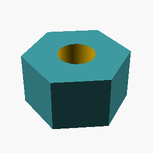
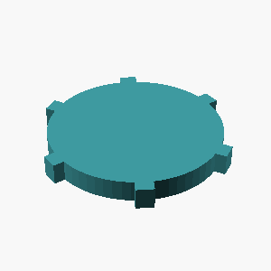
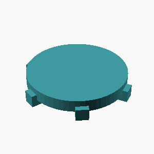
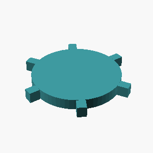
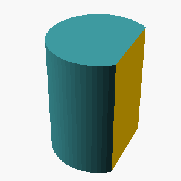
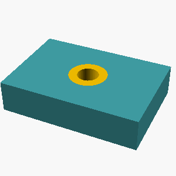
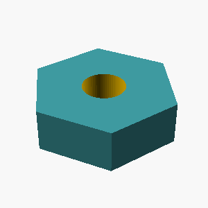

anthropic/claude-haiku-4.5
mean reward 0.957 · compile rate 99% · 120 valid rollouts. Blue = reference; green ≥ 0.9, orange ≥ 0.4, red below. Hover a tile for the generated OpenSCAD.
L1 · example 0 · mean 1.00 · max 1.00
A solid rectangular box 15mm wide, 15mm deep, and 35mm tall.

;")
L2 · example 1 · mean 0.87 · max 1.00
A solid hexagonal prism 35mm tall, 60mm across the flats, with two flats parallel to the x axis, with a 12mm-radius hole drilled vertically through the center of the entire part. The part sits on the z=0 plane, centered on the Z axis.

 {
// Create hexagonal prism
// 60mm across the flats means the distance between parallel flats is 60mm
// For a regular hexagon, if the distance between parallel flats is d,
// then the circumradius r = d / sqrt(3)
r = 60 / sqrt(3);
cylinder(h=35, r=r, $fn=6, center=false);
// Drill 12mm radius hole through the center
translate([0, 0, -1]) cylinder(h=37, r=12, $fn=64);
}")
 {
// Create hexagonal prism
// 60mm across flats means the distance between parallel flats is 60mm
// For a regular hexagon with distance d between parallel flats: radius = d / sqrt(3)
hex_radius = 60 / sqrt(3);
cylinder(h=35, r=hex_radius, $fn=6);
// Drill 12mm radius hole through center
translate([0, 0, -1]) {
cylinder(h=37, r=12, $fn=64);
}
}")

 {
// Hexagonal prism: 60mm across flats, 35mm tall
// Two flats parallel to x-axis means flat edges at top and bottom
cylinder(h=35, r=30, $fn=6, center=false);
// 12mm radius hole through the center
translate([0, 0, -1]) cylinder(h=37, r=12, $fn=64);
}")
L5 · example 2 · mean 1.00 · max 1.00
Create a triangular prism standing 45mm tall: its base is a right triangle with legs of 20mm (along X) and 30mm (along Y) meeting at the origin.

 {
polygon(points=[[0,0], [20,0], [0,30]]);
}")
L4 · example 3 · mean 0.95 · max 0.95
A solid hexagonal prism 50mm tall, 40mm across the flats, with two flats parallel to the x axis, with a 3mm-radius hole drilled vertically through the center of the entire part; and a cone of base radius 12mm and height 20mm standing centered on its top face, apex up. The part sits on the z=0 plane, centered on the Z axis.

 {
union() {
// Hexagonal prism: 50mm tall, 40mm across the flats
// Two flats parallel to x-axis means the prism is rotated so flats face +/-y
cylinder(h=50, r=40/sqrt(3), $fn=6);
// Cone on top: base radius 12mm, height 20mm, apex up
translate([0, 0, 50]) cylinder(h=20, r1=12, r2=0, $fn=64);
}
// Hole: 3mm radius drilled vertically through entire part
translate([0, 0, -1]) cylinder(h=72, r=3, $fn=64);
}")
 {
union() {
// Hexagonal prism: 50mm tall, 40mm across the flats
// For a regular hexagon with \"across the flats\" = 40mm,
// the radius (center to vertex) = 40mm / sqrt(3)
cylinder(h=50, r=40/sqrt(3), $fn=6);
// Cone on top: base radius 12mm, height 20mm
translate([0, 0, 50]) cone(r=12, h=20);
}
// Hole drilled through the center
translate([0, 0, -1]) cylinder(h=72, r=3, $fn=64);
}
module cone(r, h) {
cylinder(h=h, r1=r, r2=0, $fn=64);
}")
 {
union() {
// Hexagonal prism: 50mm tall, 40mm across the flats
// Two flats parallel to x axis means flats at top/bottom and left/right
// For a regular hexagon with distance across flats = 40mm,
// the circumradius = 40/(2*cos(30°)) = 40/sqrt(3)
cylinder(h=50, r=40/(2*cos(30)), $fn=6);
// Cone on top: base radius 12mm, height 20mm, apex up
translate([0, 0, 50]) cylinder(h=20, r1=12, r2=0, $fn=64);
}
// Drill hole: 3mm radius through entire part (including cone)
translate([0, 0, -1]) cylinder(h=72, r=3, $fn=64);
}")
 {
union() {
// Hexagonal prism: 50mm tall, 40mm across the flats
// For a regular hexagon with 40mm flat-to-flat (width),
// the radius (center to vertex) is 40/sqrt(3)
cylinder(h=50, r=40/sqrt(3), $fn=6);
// Cone on top: 12mm base radius, 20mm height
translate([0, 0, 50]) cone(r=12, h=20);
}
// Hole through center: 3mm radius
translate([0, 0, -1]) cylinder(h=72, r=3, $fn=64);
}
module cone(r, h) {
cylinder(h=h, r1=r, r2=0, $fn=64);
}")
L1 · example 4 · mean 1.00 · max 1.00
A solid cylinder 25mm tall with a radius of 20mm, standing upright.

L5 · example 5 · mean 1.00 · max 1.00
Create a triangular prism standing 25mm tall: its base is a right triangle with legs of 45mm (along X) and 30mm (along Y) meeting at the origin.

 {
polygon(points=[[0,0], [45,0], [0,30]]);
}")
 {
polygon([
[0, 0],
[45, 0],
[0, 30]
]);
}")
L3 · example 6 · mean 0.70 · max 1.00
A solid hexagonal prism 25mm tall, 50mm across the flats, with two flats parallel to the x axis, with 4 holes of radius 2mm drilled vertically through it, evenly spaced on a circle of radius 18.1mm around the center, the first hole on the +X axis; and a 8mm-radius hole drilled vertically through the center of the entire part. The part sits on the z=0 plane, centered on the Z axis.

 {
// Create the hexagonal prism
// 50mm across the flats means the distance between two parallel sides is 50mm
// For a regular hexagon with two flats parallel to x-axis:
// width (x-direction, flat to flat) = 50mm
// The radius (center to vertex) for this configuration is 50/sqrt(3)
radius = 50 / sqrt(3);
linear_extrude(height = 25) {
circle(r = radius, $fn = 6);
}
// Drill the central 8mm radius hole
translate([0, 0, -1]) {
cylinder(h = 27, r = 8, $fn = 64);
}
// Drill the 4 holes of radius 2mm on a circle of radius 18.1mm
// First hole on +X axis, then evenly spaced (90 degrees apart)
for (angle = [0, 90, 180, 270]) {
translate([18.1 * cos(angle), 18.")
 is A / sqrt(3)
// So radius = 50 / sqrt(3) ≈ 28.868
hex_radius = 50 / sqrt(3);
difference() {
// Main hexagonal prism
cylinder(h = 25, r = hex_radius, $fn = 6);
// Center hole - 8mm radius
translate([0, 0, -1]) cylinder(h = 27, r = 8, $fn = 64);
// Four holes on circle of radius 18.1mm
// First hole on +X axis, then evenly spaced (90 degrees apart)
for (i = [0 : 3]) {
angle = i * 90;
x = 18.1 * cos(angle);
y = 18.1 * sin(angle);
translate([x, y, -1]) cylinder(h = 27, r = 2, $fn = 64);
}
}")
 {
// Hexagon with 50mm across flats (width between parallel sides)
// For a regular hexagon, if the distance across flats is D,
// the radius (center to vertex) is D / sqrt(3)
flat_distance = 50;
radius = flat_distance / sqrt(3);
// Create hexagon with two flats parallel to x-axis
// This means flats are at top and bottom (perpendicular to y-axis)
rotate([0, 0, 30]) {
cylinder(h=25, r=radius, $fn=6);
}
}
// Main part
difference() {
// Base hexagonal prism
hexagonal_prism();
// Central hole - 8mm radius through the center
translate([0, 0, -1]) {
cylinder(h=27, r=8, $fn=64);
}
// Four holes on a circle of radius 18.1mm
// First hole on +X axi")
 {
// Hexagonal prism: 25mm tall, 50mm across the flats
// Two flats parallel to x-axis means flat-to-flat distance is 50mm
// For a regular hexagon with flat-to-flat distance of 50mm:
// The circumradius r = distance_across_flats / sqrt(3)
r = 50 / sqrt(3);
cylinder(h=25, r=r, $fn=6, center=false);
// Rotate so that two flats are parallel to x-axis
rotate([0, 0, 30])
cylinder(h=25, r=r, $fn=6, center=false);
// Union won't work here, need to use the rotated version
// Actually, let me reconsider: a hexagon with flats parallel to x-axis
// This means two opposite sides are parallel to the x-axis
// For standard orientation, rotate by 30 degrees
union() {
// 4 holes on a circle of radius 18.1mm,")
L4 · example 7 · mean 0.97 · max 1.00
A solid hexagonal prism 50mm tall, 35mm across the flats, with two flats parallel to the x axis, with hollowed out from the top into an open container with 5mm thick walls and floor. The part sits on the z=0 plane, centered on the Z axis.


// For a regular hexagon: distance across flats = circumradius * sqrt(3)
// So circumradius = 35 / sqrt(3)
circumradius = 35 / sqrt(3);
difference() {
// Solid hexagonal prism, 50mm tall
cylinder(h=50, r=circumradius, $fn=6);
// Hollow out the top - create a hexagonal hole
// The hole goes from z=5 (5mm floor thickness) to z=50
// Hole radius is slightly smaller to leave 5mm walls
hole_radius = circumradius - 5;
translate([0, 0, 5]) cylinder(h=45, r=hole_radius, $fn=6);
}")
 = 17.5 / cos(30°) = 20.207...mm
apothem = 35/2;
circumradius = apothem / cos(30);
difference() {
// Solid hexagonal prism
cylinder(h=50, r=circumradius, $fn=6);
// Hollow from top: cylinder that removes material
// Inner dimensions: walls are 5mm thick, floor is 5mm thick
// So hollow goes from z=5 (top of floor) to z=50 (top of part)
// Inner circumradius = outer - 5mm
inner_radius = circumradius - 5;
translate([0, 0, 5]) {
cylinder(h=50, r=inner_radius,")
 is 35mm,
// then the radius (center to vertex) is 35/sqrt(3)
outer_radius = 35 / sqrt(3);
// Inner radius for the hollowed container (5mm wall thickness)
// The inner hexagon should be set back by 5mm from each flat
// Distance across flats for inner hexagon = 35 - 2*5 = 25mm
inner_radius = 25 / sqrt(3);
difference() {
// Outer solid hexagonal prism
cylinder(h = 50, r = outer_radius, $fn = 6);
// Hollow out from the top, leaving 5mm floor
// Cut from z=5 (floor thickness) to z=50 (top)
translate([0, 0, 5])
cylinder(h = 45, r = inner_radius, $fn = 6);
}")

// So diameter = 35 / cos(30°) = 35 / (sqrt(3)/2) = 70/sqrt(3)
// The circumradius (distance from center to vertex) = diameter/2 = 35/sqrt(3)
// But we need to work with the flat-to-flat dimension directly
// For a hexagon with flats parallel to x-axis:
// flat-to-flat distance = 35mm
// This means the apothem (center to middle of flat) = 35/2 = 17.5mm
// circumradius = apothem / cos(30°) = 17.5 / (sqrt(3)/2) = 35/sqrt(3)
hex_apothem = 35 / 2; // 17.5mm
hex_circumradius = hex_apothem / cos(30);
// Wall thickness and floor thickness
wall_thickness = 5;
floor_thickness = 5;
height = 50;
inner_height = height -")
L5 · example 8 · mean 1.00 · max 1.00
Create a 35mm-tall prism shaped like a plus sign, formed by two perpendicular 60mm x 20mm bars crossing at their midpoints.

 {
union() {
// First bar (along x-axis)
cube([bar_length, bar_width, height], center = true);
// Second bar (along y-axis)
cube([bar_width, bar_length, height], center = true);
}
}")
 {
union() {
// First bar (along x-axis)
cube([bar_length, bar_width, height], center=true);
// Second bar (along y-axis)
cube([bar_width, bar_length, height], center=true);
}
}")
 {
// Horizontal bar
cube([bar_length, bar_width, height], center=true);
// Vertical bar
cube([bar_width, bar_length, height], center=true);
}")
 union() {
// Horizontal bar: 60mm x 20mm x 35mm
cube([60, 20, 35], center=true);
// Vertical bar: 20mm x 60mm x 35mm
cube([20, 60, 35], center=true);
}")
L2 · example 9 · mean 1.00 · max 1.00
An open-top rectangular container with outer dimensions 55mm x 70mm x 55mm, wall and floor thickness 5mm.

 {
// Outer box
cube([55, 70, 55]);
// Inner cavity (open top)
translate([5, 5, 5]) {
cube([45, 60, 50]);
}
}")
 {
// Outer box
cube([55, 70, 55]);
// Inner cavity (open top)
translate([5, 5, 5]) cube([45, 60, 50]);
}")
L3 · example 10 · mean 1.00 · max 1.00
A stepped circular shaft standing upright, made of 2 stacked coaxial cylinders from bottom to top: a section of radius 35mm and height 25mm, then a section of radius 20mm and height 20mm. Each section is narrower than the one below it.

;
translate([0, 0, 25]) cylinder(h=20, r=20, $fn=64);")
 {
// Bottom section: radius 35mm, height 25mm
cylinder(h=25, r=35, $fn=64);
// Top section: radius 20mm, height 20mm
translate([0, 0, 25]) cylinder(h=20, r=20, $fn=64);
}")
;
// Top cylinder: radius 20mm, height 20mm, positioned above the bottom cylinder
translate([0, 0, 25]) cylinder(h=20, r=20, $fn=64);")
L5 · example 11 · mean 0.91 · max 0.91
A flat rectangular plate 90mm x 50mm and 11mm thick, with a rounded slot cut all the way through its center: the slot is 64mm long along the X direction and 12mm wide, with semicircular ends.

 {
// Main rectangular plate
cube([90, 50, 11], center=true);
// Rounded slot through the center
// The slot is 64mm long (X direction) and 12mm wide (Y direction)
// with semicircular ends
union() {
// Main rectangular part of the slot
cube([64, 12, 12], center=true);
// Left semicircular end (radius = 6mm, which is 12mm width / 2)
translate([-32, 0, 0]) cylinder(h=12, r=6, $fn=64, center=true);
// Right semicircular end (radius = 6mm)
translate([32, 0, 0]) cylinder(h=12, r=6, $fn=64, center=true);
}
}")
 {
// Main rectangular plate
cube([90, 50, 11], center=true);
// Rounded slot through the center
// The slot is 64mm long (X direction) and 12mm wide (Y direction)
// with semicircular ends
union() {
// Rectangular center part of the slot
cube([64, 12, 12], center=true);
// Left semicircular end (radius 6mm, which is half of 12mm width)
translate([-32, 0, 0]) cylinder(h=12, r=6, $fn=64, center=true);
// Right semicircular end (radius 6mm)
translate([32, 0, 0]) cylinder(h=12, r=6, $fn=64, center=true);
}
}")
 {
// Main rectangular plate: 90mm x 50mm x 11mm thick
cube([90, 50, 11], center=true);
// Rounded slot through the center
// The slot is 64mm long (X direction) and 12mm wide
// with semicircular ends
union() {
// Main rectangular part of the slot (64mm x 12mm)
cube([64, 12, 12], center=true);
// Left semicircular end (radius 6mm, which is half of 12mm width)
translate([-32, 0, 0]) cylinder(h=12, r=6, center=true, $fn=64);
// Right semicircular end (radius 6mm)
translate([32, 0, 0]) cylinder(h=12, r=6, center=true, $fn=64);
}
}")
 {
// Rectangular plate: 90mm x 50mm x 11mm
cube([90, 50, 11], center=true);
// Rounded slot cut through the center
// The slot is 64mm long (X direction) and 12mm wide
// with semicircular ends
union() {
// Center rectangular part of the slot
cube([64, 12, 12], center=true);
// Left semicircular end (radius = 6mm, which is half of 12mm width)
translate([-32, 0, 0]) cylinder(h=12, r=6, $fn=64, center=true);
// Right semicircular end
translate([32, 0, 0]) cylinder(h=12, r=6, $fn=64, center=true);
}
}")
L1 · example 12 · mean 1.00 · max 1.00
A solid rectangular box 10mm wide, 55mm deep, and 60mm tall.

;")
L2 · example 13 · mean 1.00 · max 1.00
A solid box 45mm x 25mm x 60mm with a rectangular notch 10mm wide and 13mm deep cut into the middle of its top face, running through the full depth of the box.

 {
cube([45, 25, 60]);
translate([17.5, 0, 47]) cube([10, 25, 13]);
}")
 {
cube([45, 25, 60]);
// Rectangular notch: 10mm wide, 13mm deep, running through full depth (25mm)
// Centered on top face
translate([(45-10)/2, 0, 60-13]) {
cube([10, 25, 13]);
}
}")
L5 · example 14 · mean 1.00 · max 1.00
A vertical prism 45mm tall whose footprint is a right triangle with one leg 35mm along the X axis and the other leg 20mm along the Y axis, right angle at the origin.

 {
polygon(points=[[0,0], [35,0], [0,20]]);
}")
L4 · example 15 · mean 0.92 · max 1.00
A hexagonal prism (like a nut) 18mm tall, measuring 30mm across the flats, with a circular hole of radius 5mm drilled through its center along the axis.

 {
cylinder(h=18, r=30/(2*cos(30)), $fn=6);
translate([0, 0, -1]) cylinder(h=20, r=5, $fn=64);
}")
 {
// Hexagonal prism: 18mm tall, 30mm across the flats
// For a regular hexagon, the distance across flats = apothem * 2
// So apothem = 15mm, and radius = apothem / cos(30°) = 15 / cos(30°)
apothem = 15;
radius = apothem / cos(30);
cylinder(h=18, r=radius, $fn=6);
// Circular hole: 5mm radius, drilled through center
translate([0, 0, -1]) cylinder(h=20, r=5, $fn=64);
}")
 {
// Hexagonal prism: 30mm across flats, 18mm tall
// For a regular hexagon with distance across flats (width) = 30mm
// the circumradius = width / sqrt(3)
cylinder(h=18, r=30/sqrt(3), $fn=6);
// Circular hole: radius 5mm, drilled through center
translate([0, 0, -1]) cylinder(h=20, r=5, $fn=64);
}")
 {
// Hexagonal prism with 30mm across flats
// Distance from center to flat = 30/2 = 15mm
// For a regular hexagon, distance to vertex = distance to flat / cos(30°)
// Distance to vertex = 15 / cos(30°) = 15 / 0.866 ≈ 17.32mm
cylinder(h=18, r=15, $fn=6);
// Circular hole of radius 5mm through the center
translate([0, 0, -1]) cylinder(h=20, r=5, $fn=64);
}")
L1 · example 16 · mean 1.00 · max 1.00
A solid cylinder 60mm tall with a radius of 5mm, standing upright.

L5 · example 17 · mean 1.00 · max 1.00
A solid torus (donut shape) lying flat on the table: the ring's centerline circle has a radius of 15mm and the circular tube cross-section has a radius of 5mm.


translate([15, 0, 0])
circle(r=5, $fn=64);")
 {
translate([15, 0, 0]) circle(r=5, $fn=64);
}")
 {
translate([15, 0, 0]) {
circle(r=5, $fn=64);
}
}")

translate([15, 0, 0])
circle(r=5, $fn=64);")
L3 · example 18 · mean 0.89 · max 0.98
A solid box 55mm wide (x), 50mm deep (y), and 25mm tall, with 3 holes of radius 2mm drilled vertically through it, evenly spaced on a circle of radius 18.1mm around the center, the first hole on the +X axis; and a horizontal hole of radius 3mm drilled along the X axis through the whole part at half its height, centered in Y. The part sits on the z=0 plane, centered on the Z axis.

 {
// Main box: 55mm wide (x), 50mm deep (y), 25mm tall
// Centered on z-axis means it goes from z=0 to z=25
translate([-27.5, -25, 0]) cube([55, 50, 25]);
// Three vertical holes of radius 2mm, evenly spaced on circle of radius 18.1mm
// First hole on +X axis, so at angles 0°, 120°, 240°
for (angle = [0, 120, 240]) {
x = 18.1 * cos(angle);
y = 18.1 * sin(angle);
translate([x, y, -1]) cylinder(h=27, r=2);
}
// Horizontal hole of radius 3mm along X axis at half height (z=12.5)
// Centered in Y (y=0), goes through whole part
translate([-28.5, 0, 12.5]) rotate([0, 90, 0]) cylinder(h=57, r=3);
}")
 {
// Main box: 55mm wide (x), 50mm deep (y), 25mm tall
// Centered on XY plane, sitting on z=0
translate([-27.5, -25, 0]) cube([55, 50, 25]);
// 3 vertical holes of radius 2mm, evenly spaced on circle of radius 18.1mm
// First hole on +X axis, evenly spaced means 120 degrees apart
for (i = [0, 120, 240]) {
rotate([0, 0, i]) translate([18.1, 0, -1]) cylinder(h=27, r=2, $fn=64);
}
// Horizontal hole of radius 3mm along X axis at half height (z=12.5)
// Centered in Y, drilled through the whole part
translate([-28, 0, 12.5]) rotate([0, 90, 0]) cylinder(h=56, r=3, center=true, $fn=64);
}")
 {
// Main box: 55mm wide (x), 50mm deep (y), 25mm tall
// Centered on XY plane, sitting on z=0
translate([-27.5, -25, 0]) cube([55, 50, 25]);
// 3 vertical holes of radius 2mm, evenly spaced on circle of radius 18.1mm
// First hole on +X axis
for (i = [0, 120, 240]) {
translate([18.1 * cos(i), 18.1 * sin(i), -1])
cylinder(h=27, r=2, $fn=64);
}
// Horizontal hole of radius 3mm along X axis at half height (z=12.5)
// Centered in Y (y=0)
translate([-30, 0, 12.5])
cylinder(h=60, r=3, $fn=64);
}")
 {
// Main box: 55mm wide (x), 50mm deep (y), 25mm tall
translate([-27.5, -25, 0]) cube([55, 50, 25]);
// 3 vertical holes of radius 2mm, evenly spaced on circle of radius 18.1mm
// First hole on +X axis, so at angles 0°, 120°, 240°
for (angle = [0, 120, 240]) {
x = 18.1 * cos(angle);
y = 18.1 * sin(angle);
translate([x, y, -1]) cylinder(h=27, r=2, $fn=64);
}
// Horizontal hole of radius 3mm along X axis at half height (z=12.5)
// Centered in Y (y=0), extending through the whole part
translate([-30, 0, 12.5]) cylinder(h=60, r=3, $fn=64);
}")
L4 · example 19 · mean 0.77 · max 0.91
A gear-like disc 6mm thick with radius 25mm, with 6 rectangular teeth evenly spaced around its rim. Each tooth is 5mm wide and extends 6mm radially outward from the rim, spanning the full thickness of the disc.



;
// Add 6 rectangular teeth evenly spaced around the rim
for (i = [0:5]) {
angle = i * 60; // 360/6 = 60 degrees between teeth
rotate([0, 0, angle]) {
translate([25, -2.5, 0]) {
cube([6, 5, 6]);
}
}
}")

L5 · example 20 · mean 0.89 · max 0.91
A flat rectangular plate 75mm x 45mm and 5mm thick, with a rounded slot cut all the way through its center: the slot is 46mm long along the X direction and 12mm wide, with semicircular ends.

 {
// Main rectangular plate: 75mm x 45mm x 5mm thick
cube([75, 45, 5], center=true);
// Rounded slot cut through the center
// The slot is 46mm long (X direction) and 12mm wide
// with semicircular ends
// Create the slot by combining a rectangle and two semicircles
union() {
// Central rectangular part of the slot
// 46mm long, 12mm wide, goes through the entire 5mm thickness
cube([46, 12, 6], center=true);
// Left semicircular end (radius 6mm, which is half of 12mm width)
translate([-23, 0, 0]) cylinder(h=6, r=6, $fn=64, center=true);
// Right semicircular end (radius 6mm)
translate([23, 0, 0]) cylinder(h=6, r=6, $fn=64, center=true);
}
}")
 {
// Main rectangular plate
cube([75, 45, 5], center = true);
// Rounded slot cut through the center
// The slot is 46mm long (X direction) and 12mm wide
// with semicircular ends
// Main rectangular part of the slot
translate([0, 0, -1]) cube([46, 12, 7], center = true);
// Left semicircular end (cylinder)
translate([-23, 0, 0]) cylinder(h = 7, r = 6, center = true, $fn = 64);
// Right semicircular end (cylinder)
translate([23, 0, 0]) cylinder(h = 7, r = 6, center = true, $fn = 64);
}")
 {
// Main rectangular plate
cube([75, 45, 5], center=true);
// Rounded slot cut through the center
// The slot is 46mm long (X direction) and 12mm wide
// with semicircular ends
union() {
// Main rectangular part of the slot
cube([46, 12, 6], center=true);
// Left semicircular end
translate([-23, 0, 0]) cylinder(h=6, r=6, $fn=64, center=true);
// Right semicircular end
translate([23, 0, 0]) cylinder(h=6, r=6, $fn=64, center=true);
}
}")
 {
// Main rectangular plate
cube([75, 45, 5], center=true);
// Rounded slot - a rectangle with semicircular ends
// Total length 46mm along X, width 12mm
// The rounded ends are semicircles with radius 6mm (half of 12mm width)
union() {
// Central rectangular part of the slot
cube([46 - 12, 12, 6], center=true);
// Left semicircular end
translate([-(46/2), 0, 0])
cylinder(h=6, r=6, $fn=64, center=true);
// Right semicircular end
translate([(46/2), 0, 0])
cylinder(h=6, r=6, $fn=64, center=true);
}
}")
L2 · example 21 · mean 1.00 · max 1.00
A solid box 60mm x 30mm x 55mm with a rectangular notch 14mm wide and 7mm deep cut into the middle of its top face, running through the full depth of the box.

 {
cube([60, 30, 55]);
translate([(60-14)/2, 0, 55-7]) cube([14, 30, 7]);
}")
 {
cube([60, 30, 55]);
translate([23, 0, 48]) cube([14, 30, 7]);
}")
 {
cube([60, 30, 55]);
translate([(60-14)/2, -1, 55-7]) cube([14, 30+2, 7+1]);
}")
L3 · example 22 · mean 0.89 · max 1.00
A solid hexagonal prism 20mm tall, 40mm across the flats, with two flats parallel to the x axis, with a hemispherical dome of radius 7mm centered on its top face; and 4 holes of radius 2mm drilled vertically through it, evenly spaced on a circle of radius 13.1mm around the center, the first hole on the +X axis. The part sits on the z=0 plane, centered on the Z axis.

 {
// Hexagon with 40mm across the flats (distance between parallel sides)
// For a regular hexagon, if the distance across flats is d,
// the circumradius r = d / sqrt(3)
circumradius = 40 / sqrt(3);
// Create hexagon with two flats parallel to X axis
// This means flat sides on top and bottom (perpendicular to Y)
cylinder(h = 20, r = circumradius, $fn = 6);
}
// Create the hemispherical dome on top
module dome() {
translate([0, 0, 20]) {
sphere(r = 7, $fn = 64);
}
}
// Create drill holes
module drill_holes() {
for (i = [0 : 3]) {
angle = i * 90;
x = 13.1 * cos(angle);
y = 13.1 * sin(angle);
translate([x, y, -1]) {
cylinder")
 {
union() {
// Hexagonal prism: 20mm tall, 40mm across the flats
// Two flats parallel to X axis means flats are perpendicular to Y axis
cylinder(h=20, r=40/sqrt(3), $fn=6);
// Hemispherical dome on top
translate([0, 0, 20]) sphere(r=7, $fn=64);
}
// 4 holes of radius 2mm on circle of radius 13.1mm
// First hole on +X axis
for (i = [0:3]) {
angle = i * 90;
x = 13.1 * cos(angle);
y = 13.1 * sin(angle);
translate([x, y, -1]) cylinder(h=22, r=2, $fn=64);
}
}")
 {
union() {
// Hexagonal prism: 20mm tall, 40mm across the flats
// Two flats parallel to the x axis means rotate 30 degrees
rotate([0, 0, 30]) cylinder(h=20, r=40/2/cos(30), $fn=6);
// Hemispherical dome on top: radius 7mm
translate([0, 0, 20]) sphere(r=7, $fn=64);
}
// 4 holes of radius 2mm on a circle of radius 13.1mm
// First hole on +X axis
for (i = [0:3]) {
angle = i * 90;
x = 13.1 * cos(angle);
y = 13.1 * sin(angle);
translate([x, y, -1]) cylinder(h=22, r=2, $fn=64);
}
}")
 {
// Hexagonal prism: 40mm across flats, 20mm tall
cylinder(h=20, r=40/sqrt(3), $fn=6);
// Drill 4 mounting holes
for (i = [0:3]) {
angle = i * 90;
translate([13.1 * cos(angle), 13.1 * sin(angle), -1]) {
cylinder(h=22, r=2, $fn=64);
}
}
}
// Add hemispherical dome on top
translate([0, 0, 20]) {
intersection() {
sphere(r=7, $fn=64);
translate([0, 0, 0]) cube([20, 20, 7], center=true);
}
}")
L5 · example 23 · mean 1.00 · max 1.00
Create a D-shaft: a 50mm-tall cylinder of radius 20mm whose +X side is sliced off by a vertical plane 13mm from the axis, leaving a flat running the full height.


L1 · example 24 · mean 1.00 · max 1.00
A solid rectangular box 65mm wide, 50mm deep, and 20mm tall.

;")
L2 · example 25 · mean 1.00 · max 1.00
A solid box 30mm x 30mm x 30mm with a rectangular notch 10mm wide and 5mm deep cut into the middle of its top face, running through the full depth of the box.

 {
cube([30, 30, 30]);
translate([10, 0, 25]) cube([10, 30, 5]);
}")
 {
cube([30, 30, 30], center = false);
translate([10, 0, 25]) cube([10, 30, 5], center = false);
}")
L5 · example 26 · mean 0.95 · max 1.00
Create a 65x45x15mm block with a centered vertical through-hole of radius 5mm, counterbored from the top face to radius 9mm over a depth of 9mm.

 {
cube([65, 45, 15], center=true);
// Main through-hole
translate([0, 0, 0]) cylinder(h=20, r=5, $fn=64, center=true);
// Counterbore from top
translate([0, 0, 3]) cylinder(h=9, r=9, $fn=64, center=true);
}")
 {
cube([65, 45, 15], center=true);
// Through-hole with radius 5mm
translate([0, 0, 0]) cylinder(h=20, r=5, center=true, $fn=64);
// Counterbore from top: radius 9mm, depth 9mm
translate([0, 0, 7.5 - 4.5]) cylinder(h=9, r=9, $fn=64);
}")
 {
cube([65, 45, 15], center=true);
// Main through-hole
translate([0, 0, 0]) cylinder(h=20, r=5, $fn=64, center=true);
// Counterbore from top
translate([0, 0, 3]) cylinder(h=9, r=9, $fn=64);
}")

L4 · example 27 · mean 1.00 · max 1.00
A hexagonal prism (like a nut) 10mm tall, measuring 30mm across the flats, with a circular hole of radius 5mm drilled through its center along the axis.

 {
// Hexagonal prism: 30mm across flats, 10mm tall
cylinder(h=10, r=30/(2*cos(30)), $fn=6);
// Circular hole: 5mm radius through the center
translate([0, 0, -1]) cylinder(h=12, r=5, $fn=64);
}")

 {
// Hexagonal prism - 30mm across the flats, 10mm tall
cylinder(h=10, r=30/(2*cos(30)), $fn=6);
// Circular hole - 5mm radius through the center
translate([0, 0, -1]) cylinder(h=12, r=5, $fn=64);
}")
 {
// Hexagonal prism - 30mm across flats, 10mm tall
// Distance from center to flat = 30/2 = 15mm
// For a regular hexagon: radius (center to vertex) = distance_to_flat / cos(30°) = 15 / cos(30°)
// cos(30°) = sqrt(3)/2 ≈ 0.866, so radius ≈ 17.32mm
cylinder(h=10, r=15/cos(30), $fn=6);
// Circular hole through center - radius 5mm
translate([0, 0, -1]) cylinder(h=12, r=5, $fn=64);
}")
L1 · example 28 · mean 1.00 · max 1.00
A solid rectangular box 40mm wide, 40mm deep, and 20mm tall.

;")
L5 · example 29 · mean 1.00 · max 1.00
A plus-sign-shaped prism 15mm tall: two rectangular bars, each 65mm long and 10mm wide, cross at right angles at their centers (one along X, one along Y), centered on the Z axis.

 {
// Bar along X-axis
cube([65, 10, 15], center=true);
// Bar along Y-axis
cube([10, 65, 15], center=true);
}")
 {
// Bar along X axis
translate([-32.5, -5, 0]) cube([65, 10, 15]);
// Bar along Y axis
translate([-5, -32.5, 0]) cube([10, 65, 15]);
}")
 {
union() {
// Bar along X axis
cube([65, 10, 15], center=true);
// Bar along Y axis
cube([10, 65, 15], center=true);
}
}")
 {
union() {
// Bar along X axis
cube([65, 10, 15], center = true);
// Bar along Y axis
cube([10, 65, 15], center = true);
}
}")